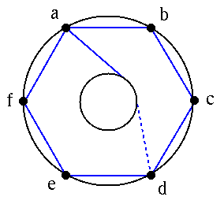

How many pairs (P,Q) of Young tableaux with P and Q having the same shape are there:
With size n = 4?
With size n = 5?

|
Complete this picture to give an embedded K3,3 on the
torus.
(The dashed line is the continuation of the solid line, but on the back of
the torus.)
Compute #V-#E+#F.
Does your answer this contradict Euler's formula?
Section 1.4 #s 22 (draw all 5), 26 (note K7 contains the other 3 as subgraphs). Section 2.1 # 10. Section 2.2 # 9 a). Section 3.1 # 12. |
|  |